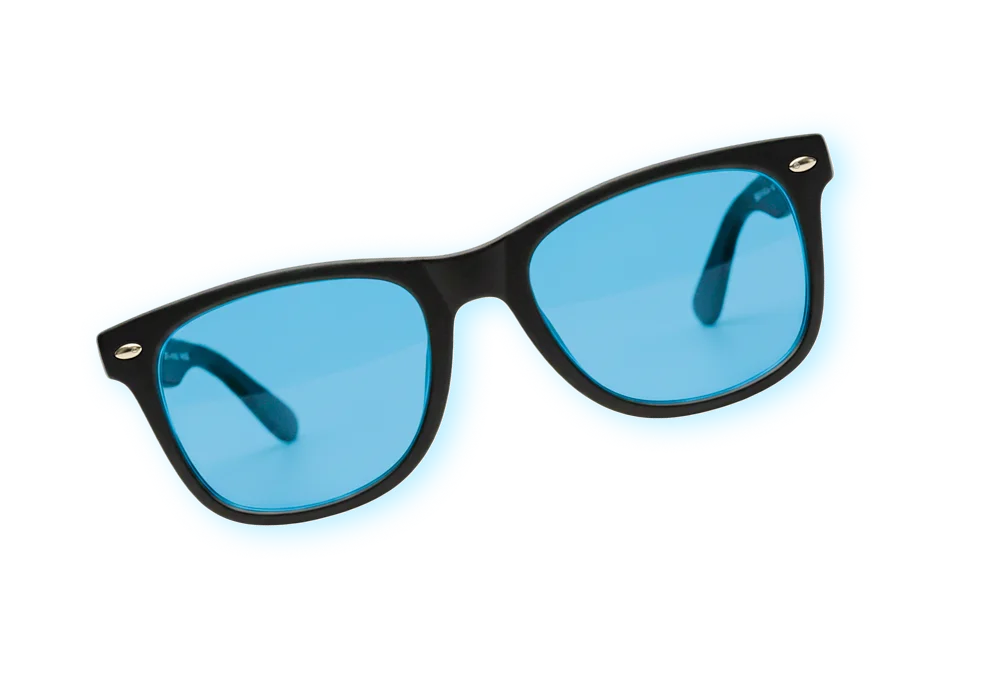
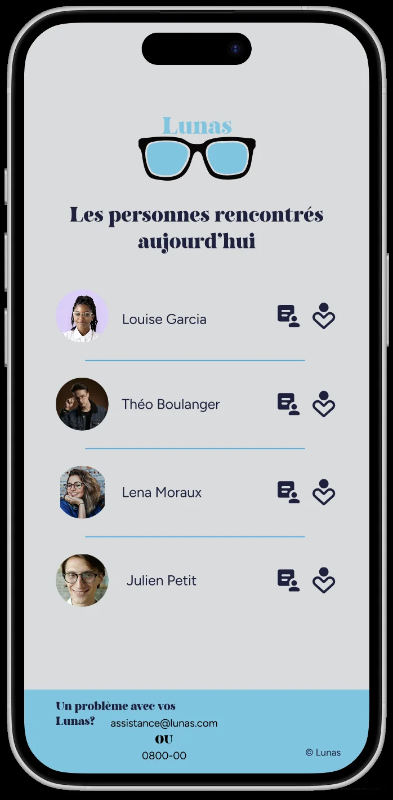

Mode d'emploi

Ses commandes

L’interface de vos Lunas
-

L'interface par défaut
-
L'interface avec l'onglet « profil de la personne » ouvert
Le code couleurs en mode compatibilité

Compatible à
Notre app
Retrouvez l’historique quotidien de vos rencontres sur notre application. Vous pourrez accéder à toutes les informations sur les personnes croisées et même les ajouter à vos favoris.
Retrouvez notre application

